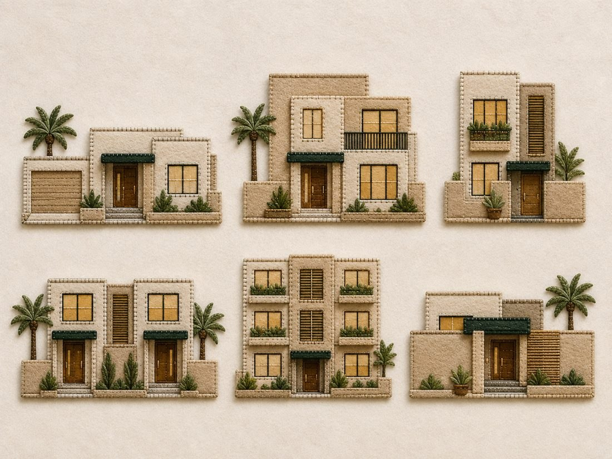

ستّ واجهات مساكن من الجوخ · وحدة العائلة · تمهيدي ٥–٦ سنوات

اللوحة المرجعية: ستّ واجهات مساكن من الجوخ بألوان رمليّة موحّدة
بطاقة اللوحة
الاسم
لوحة أنماط المساكن — ستّ واجهات من الجوخ
الوحدة المرتبطة
وحدة العائلة · تمهيدي (٥–٦ سنوات)
ما تعرضه اللوحة
ستّة أنماط من المساكن التي تسكنها الأسر، بواجهات موحّدة اللون متمايزة التفاصيل
عدد القطع
٦ واجهات مستقلّة + خلفية قماشيّة واحدة
المقاس المقترح
الواجهة الواحدة ٢٢ × ١٦ سم · الخلفية ١٠٠ × ٧٠ سم
زمن التنفيذ
٦ – ٨ ساعات على ثلاث جلسات (جلسة تصميم وقصّ · جلستا خياطة)
مستوى الصعوبة
متوسّط — لا يحتاج خبرة سابقة في التطريز
التكلفة التقديريّة
منخفضة؛ أغلى بند هو الجوخ المخلوط والخلفية
قبل أن تبدئي — سبع قواعد ثابتة في شغل الجوخ
نوع الجوخ: جوخ بوليستر (رخيص، يُبَرْبَر مع الاستعمال) وجوخ صوفيّ أو مخلوط (أغلى، لكن حوافّه أنظف ولونه ثابت). للّوحات التي تُستعمل كلّ يوم اختاري المخلوط بسماكة ٢ مم للأجسام و١ مم للتفاصيل الصغيرة.
القصّ يصنع نصف الجودة: استعملي مقصًّا صغيرًا مدبَّبًا مخصَّصًا للقماش، واقصّي كلّ حافّة متّصلة بحركة واحدة لا بقصّات متقطّعة.
من الخلف إلى الأمام: رتّبي الطبقات دائمًا — الخلفيّة، ثمّ الكتل الكبيرة، ثمّ التفاصيل الصغيرة، ثمّ القطع البارزة.
الخياطة لا الغراء: الغراء الحراريّ يُذيب ليف الجوخ الرقيق ويترك أثرًا لامعًا ينفصل بعد أسابيع. استعملي الغراء للتثبيت المؤقّت فقط، والخياطة هي الأساس.
الخيط: خيط تطريز قطنيّ (DMC أو ما يماثله) بستّ فتائل يُفصَل إلى فتيلتين للغرز الدقيقة، وثلاث للحواف. طول الخيط لا يتجاوز ٥٠ سم حتى لا يتشابك.
التجربة الجافّة: رتّبي كلّ القطع المقصوصة على الخلفيّة وصوّريها بجوّالك قبل أن تخيطي غرزة واحدة.
اختبار المسافة: علّقي اللوحة وابتعدي ثلاثة أمتار — وهي مسافة آخر طفل في الحلقة. ما لا يُرى من هناك يحتاج لونًا أقوى أو حجمًا أكبر.
أوّلًا: الخامات والأدوات
الخامات
الخامة
المواصفة
الكميّة
بديل متاح
جوخ بيج رمليّ
٢ مم
فرخان ٣٠×٤٠
قماش لباد سميك
جوخ كريميّ فاتح
١ مم — للحواف والإطارات
فرخ واحد
الجوخ الرمليّ بدرجة أفتح
جوخ أخضر داكن
١ مم — المظلّات وسعف النخل
فرخ واحد
جوخ زيتونيّ
جوخ بنّي خشبيّ
١ مم — الأبواب والجذوع
نصف فرخ
جوخ بنّي غامق
جوخ أصفر عسليّ
١ مم — النوافذ المضاءة
نصف فرخ
قماش ساتان ذهبيّ
جوخ رماديّ
١ مم — الأرصفة والعتبات
نصف فرخ
جوخ بيج غامق
جوخ أخضر زيتيّ
١ مم — الشجيرات
نصف فرخ
بقايا الأخضر الداكن
حشو بوليستر
خفيف — لبروز الجدران
كفّ واحدة
بقايا قطن
خيط تطريز قطنيّ
٦ فتائل — بيج · أبيض · بنّي · أخضر · ذهبيّ
بكرة لكلّ لون
خيط خياطة مزدوج
خلفيّة اللوحة
قماش كتّان أو جوخ عاجيّ مشدود على لوح فوم
١٠٠×٧٠ سم
لوح كرتون مقوّى مغطّى
فيلكرو لاصق
نقاط قطر ٢ سم
٢٤ نقطة
أزرار ضغط مخيطة
الأدوات
مقصّ صغير مدبَّب للقماش · مقصّ ورق منفصل لقصّ الباترون.
إبرة تطريز رقم ٧ (ثقبها واسع ورأسها غير حادّ).
قلم يختفي بالماء أو قلم طباشير خيّاطين — لا قلم حبر.
ورق باترون ٢٠٠ جم وورق شفّاف للنقل، ومسطرة ٣٠ سم.
دبابيس أو مشابك خياطة صغيرة (المشابك أفضل، لا تترك ثقوبًا).
غراء نسيج سائل للتثبيت المؤقّت فقط.
كوّاية بحرارة منخفضة مع قطعة قماش عازلة.
ثانيًا: لوحة الألوان
وحدة اللون هي سرّ أناقة اللوحة: كلّ المساكن من عائلة لونيّة واحدة (رمليّ)، والتمييز يقع على التفاصيل لا على الجدران. اطلبي هذه الدرجات بالاسم أو قارنيها بالمربّعات الآتية عند الشراء:
رمليّ — الجدران
#D9CBB0
كريميّ — الحواف
#EFE4CE
رمليّ غامق — التظليل
#C9BB9E
عسليّ — النوافذ
#E4B857
بنّي — الأبواب
#7A4A20
أخضر داكن — المظلّات
#2E4A3C
عاجيّ — الخلفيّة
#F2ECE0
زيتيّ — الشجيرات
#6E7A4A
رماديّ — الأرصفة
#A9A69C
قاعدة: ثلاث درجات من البيج على الأكثر في اللوحة الواحدة. الدرجة الرابعة تجعل اللوحة مشوَّشة لا غنيّة.
ثالثًا: خطوات التصميم ورسم الباترون
حدّدي الأنماط الستّة: (١) بيت بدور واحد ومرآب · (٢) فيلا بدورين وشرفة · (٣) بيت ضيّق بدورين وسلّم خارجيّ · (٤) بيتان متلاصقان لعائلتين · (٥) عمارة سكنيّة بثلاثة أدوار · (٦) بيت بفناء وسور.
ارسمي على ورق مربّعات ١ سم؛ المربّع الواحد يساوي سنتيمترًا واحدًا في اللوحة، فلا تحتاجين قياسًا في كلّ خطوة.
ابدئي بالكتلة الكبرى (جسم البيت) ثمّ أضيفي كتلة الطابق العلويّ مزاحة عن مركزها، ثمّ السور الأماميّ. التزاحُف بين الكتل هو ما يعطي الإحساس بالعمق.
ثبّتي هذه النسب في كلّ الواجهات: الباب ٣ × ٥ سم · النافذة ٤ × ٤ سم · ارتفاع السور ٣ سم · سُمك الحافّة الفاتحة ٠٫٨ سم · المظلّة فوق الباب ٤ × ١ سم.
رقّمي أجزاء كلّ واجهة على الباترون (١ الجسم · ٢٠ الطابق · ٣٠ السور · ٤٠ الباب...) واكتبي بجانب كلّ رقم اللون وعدد القطع.
اقصّي الباترون من الورق المقوّى واحفظيه في ظرف باسم كلّ واجهة؛ ستحتاجينه عند التلف أو عند تنفيذ نسخة ثانية.
جرّبي التركيب على الورق أوّلًا (تجربة جافّة) وصوّريها — هذه الصورة مرجعك أثناء الخياطة.
رابعًا: خطوات التنفيذ
انقلي الباترون على ظهر الجوخ بقلم يختفي، واتركي بين القطعة والأخرى سنتيمترًا لتوفير الخامة.
اقصّي كلّ قطعة ورتّبيها في أطباق حسب الواجهة، ولا تخلطي قطع واجهتين.
ثبّتي جسم البيت على الخلفيّة بمشابك، ثمّ خيّطي محيطه بغرزة اللحاف بخيط أفتح درجة من الجوخ، والمسافة بين الغرزة والأخرى ٤ مم ثابتة.
أضيفي كتلة الطابق العلويّ فوقه بالطريقة ذاتها، ثمّ السور الأماميّ أخيرًا ليغطّي أطراف ما تحته.